STORIES
「60 年代前半」って、実際どんな感じ？
1963年当時の世帯の中央値年収は 6,200 ドル。いまの貨幣価値に直すと 6 万ドルちょい。日本円にすると1000万円？結構高かったんですね。
1960年に1台以上の車を所有する世帯は78％。ほぼ各家庭に1台、人口1000人当たり396台の車があったという。通勤で父親が車を使い、奥さんが買い物に使うために二台目を持ち始めたという時代。ChevyIIの属するコンパクトカーはまさにそういうファミリー層の奥さんをターゲットにした車だった。
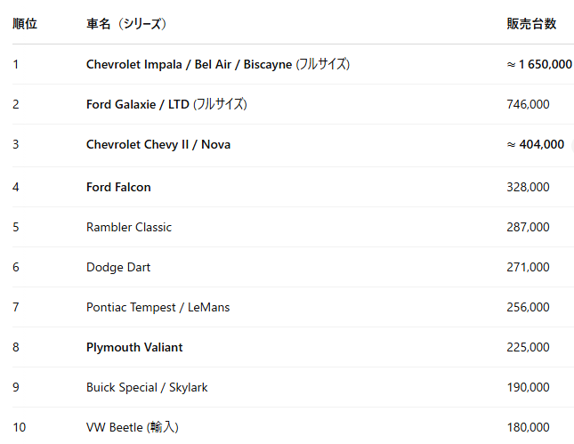
1963 年 米国乗用車モデル別販売トップ 10
ChevroletのImpala, Bel Air, Biscayneと、Ford Galaxieが1位2位を締め、ChevyIIとFalconが3位4位となっている。他のメーカーのコンパクトカーも見てみると20万台は売れていることがわかる。
Corvair で滑って、Falcon に煽られた GM
GM は "先進的!" を狙ってリアエンジンの Corvair を投入（いま思えば超チャレンジ）。でも後輪サスペンションのクセが強すぎて、のちにラルフ・ネーダーにやり玉にあげられる。そこへ Ford Falcon が「フツーの FR」でズドンと大ヒット。
Chevy II は「このままでは市場を奪われてしまうので保守的な車を」と、ほぼ突貫で設計されたらしい。GM 社内では "falcon fighter" なんてあだ名が付いていたとか。
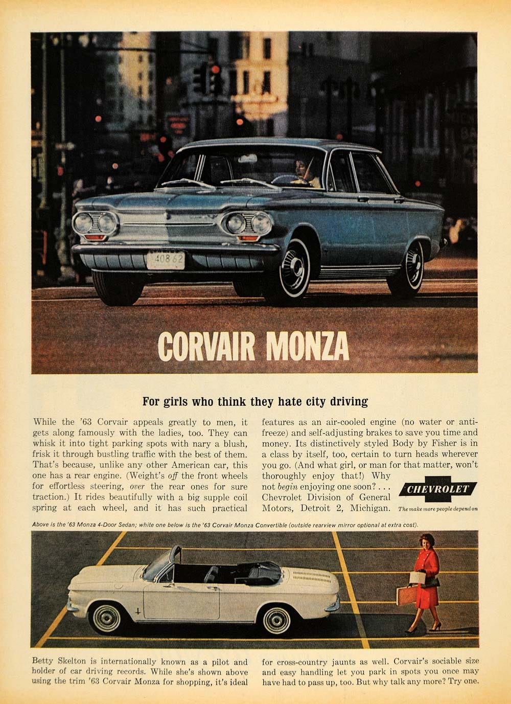
Chevrolet Corvair 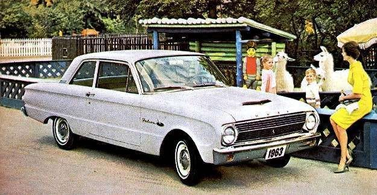
Ford Falcon 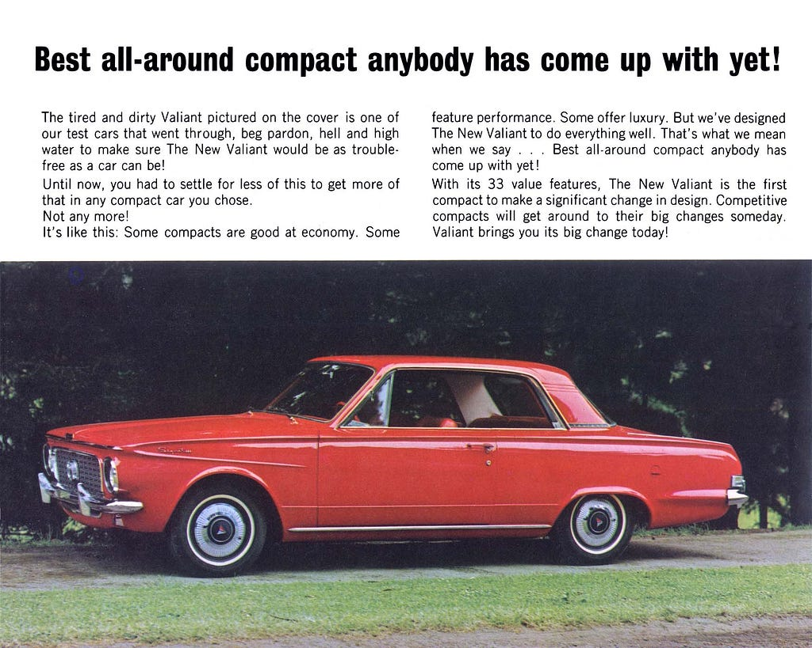
Plymouth Valiant 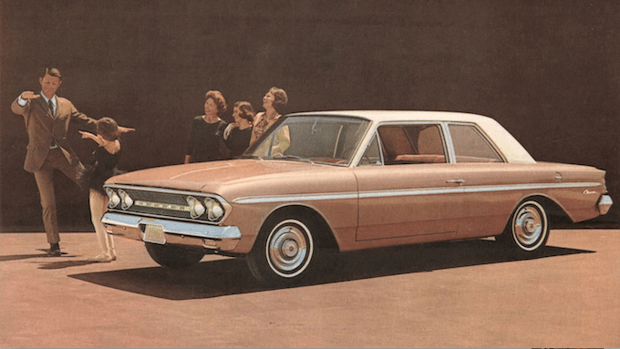
AMC Rambler Classic 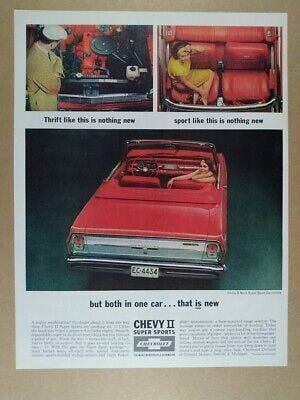
Chevrolet ChevyII たいていの家庭は1台目に大き目の車を持ち、二台目にコンパクトカーを買うというのが当時のメーカーの考えた顧客層だった。なので女性が広告に登場するシーンが多かったりする。コンパクトなサイズ（と言っても日本だと3ナンバーサイズだが）も女性がスーパーマーケットの駐車場で取り回しが楽なようにということらしい。
2024年5月の作業
前回アイドリングの改善のためにいくつかの作業をしてもらったのですが、すっきりせず。修理工場と相談していたら同じEdelbrockで、AVS2というのに交換しちゃいましょうということになりました。
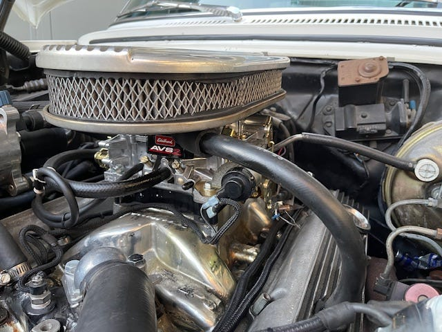
AVS2というキャブ また、メーターゲージ内の右側、水温とかガスのメーターなどの部分が煤けていて照明も暗くて買った時から気になっていたのですが、eBayで見つけて少しでも円安のタイミングで購入。これも付け替えてもらいます。
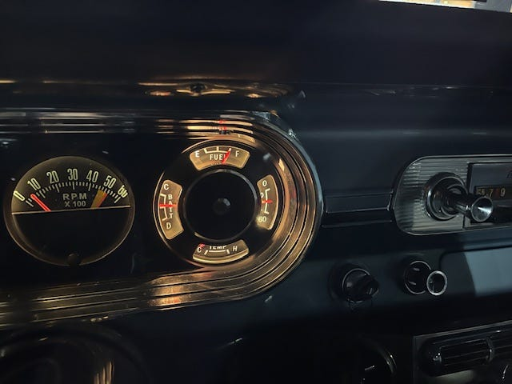
めっちゃ光るようになった この４つのコンビネーションのゲージなんですが、簡単ではなかったようで、上、右、左のメーターは稼働してますが、下のTEMPはセンサーと配線を既存の社外メーターと共用できないらしく今は動いていません。
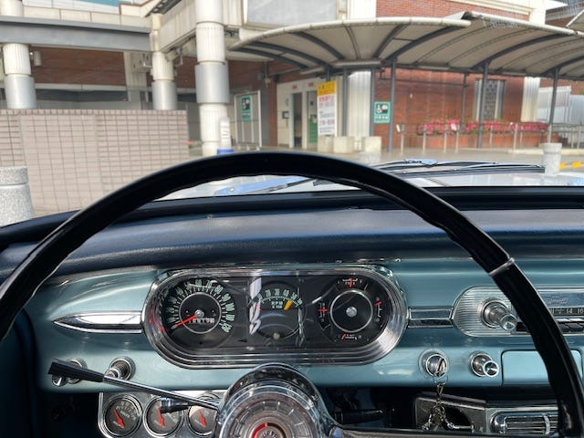
昼間の様子 メーターゲージがきれいになると、運転中ずっと目に入る部分なので精神衛生上とてもいい感じです。1963年の車だと考えるとめっちゃきれいに見えます。この画像のウインカーレバーの下の3連メーターが、今回交換したメーターゲージ右側の内、ガス計以外を表示しています。念のためどちらも稼働させるようにしてもらいました。（社外メーターの方が表示が細かいので正確なのかも？と思って）
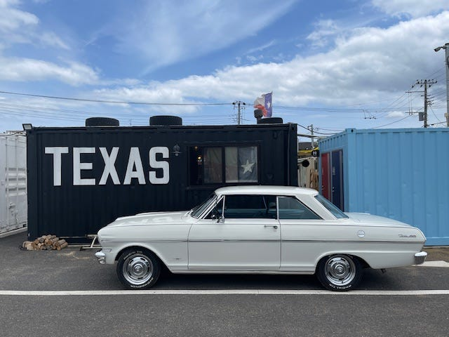
T's BBQ いろいろいい感じになったのでうれしくて、千葉の成田空港のちょい手前。冨里にあるT's BBQまでNovaで行きました。めちゃくちゃ美味しいし、テキサス！っていう味なのでおすすめです。
Nova アワードをいただく
2024.12.10
2024年4月7日の日曜に埼玉県の朝霞の森で行われたこじんまりしたアメ車のイベントでアワードをもらいました。知り合いと屋台でご飯を買ってあーだこーだ言いながら食べて戻って来たらこの紙がワイパーに挟んでありました。
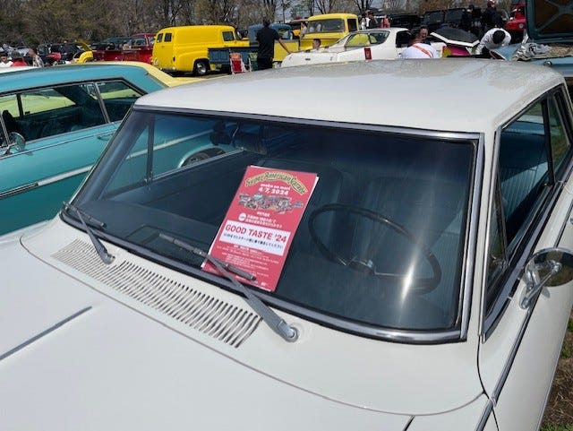
朝霞の森でのイベントでアワードを 自分の車なるべくきれいには乗っているけれどNovaって地味な車なのでこういうのがもらえるとは思わず、うれしかったです。
アワードをとると、一台ずつステージに移動して紹介してもらえるのですが、自分の車はイベントに協賛している雑誌の推薦だったらしく、主催の方から「自分なら選ばないけど、○○誌の推薦なので」みたいな紹介のされ方をしてちょっとイラっとしましたが、まあいいやと。
偶然にも以前第三京浜の都筑PAで見かけたきれいなNovaの方とも知り合えていろいろ教えてもらえました。
クーラーの改善とタコメーター交換
2024.12.10
23年9月の修理
夏の間にクーラーを何度か使ったがどうも効きが悪い。足元はむしろ熱い。なのでなんとかならないのかな？と思っていたのと、クーラーを付けている状態で信号などで止まると、アイドリングが不安定になることが多くてちょっと困っていました。夏はやはり暑いのでクーラー付けたいですし。なのでその部分を修理工場と相談してました。
そんな時に純正風の針が左右に振れるタイプのタコメーターを見つけて買ってしまいました。なので以前にメーターゲージ内の時計をタコメーターに変更してもらったのですが、更にタコメーターを交換します。
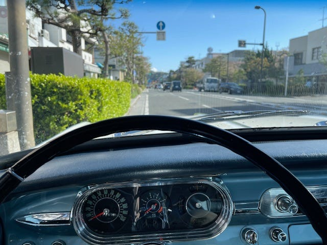
Nova用だけど純正とは違うタコメーター 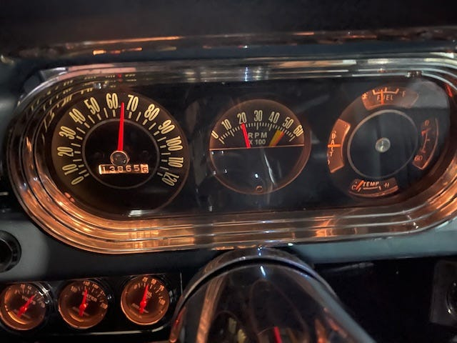
eBayで見つけた純正タコメーター ついでにあちこち見ていただいて、アイドリングの不安定さについてフューエルラインの問題でパーコレーションが起きているかもしれないので、そのホースのやり直しと、キャブレターとエンジンの間にスペーサーを入れて熱がキャブに伝わりにくくするなどの作業と、ラジエターホースの一部にもうすぐ裂けそうなところを見つけたので上下のホースの交換とヒーターの熱を夏は遮断して車内に来ないようにするなどもセットでお願いしました。
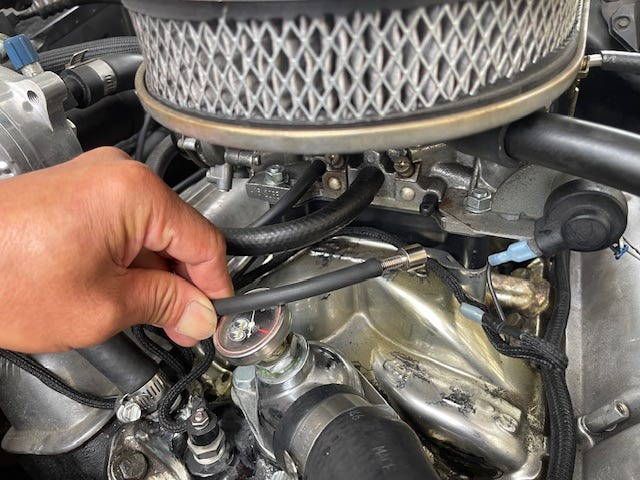
キャブとエンジンの間の黒い板がスペーサー
HONDA Z GSS 1973
2023.09.18
ひょんなことで、「いつかZに乗りたいんですよね」という話をある人にしたら、「Z売りたい人いますよ？車見ます？」と言われて、見てしまったら、内外装はまあまあだけど、エンジンは調子良さそうでしかもGSS（五速の最上級グレード）だったし、ライトやらスイッチやらもほぼ問題なく動作するのでまあいいんじゃないか？ということで買ってしまった。
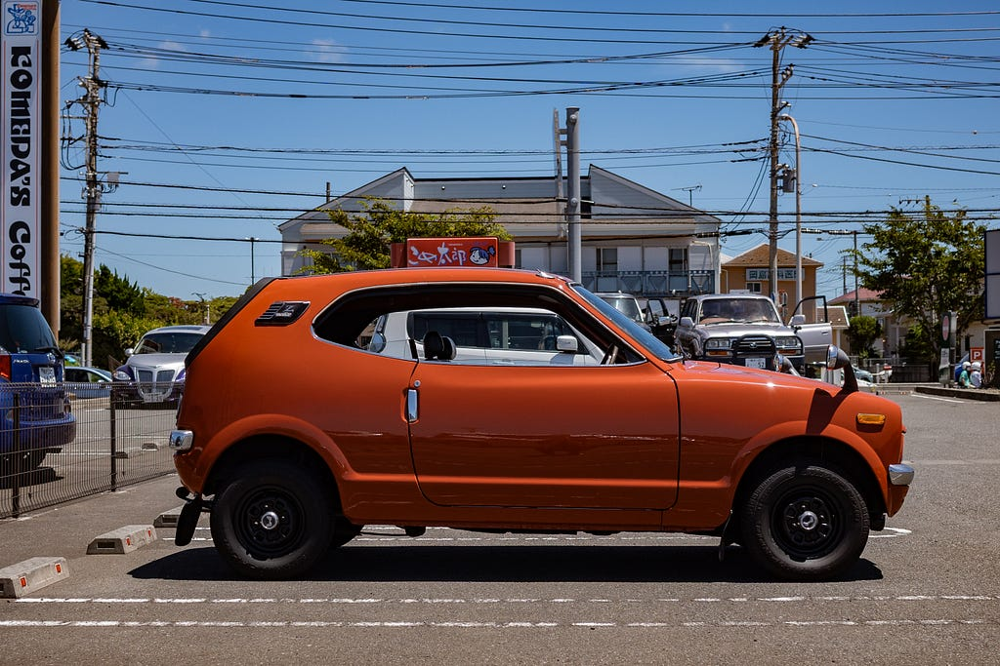
元々興味があったのは確かで、二台持ちするなら軽自動車じゃないと経済的にきついというのはあった。スバル360とか、キャロル、フロンテとかも好きだったし、ジムニーの昔のタイプも好みだったり。とは言えZは子供の頃から後姿が気になっていて、タイムガイコッツに似てるとずっと思っていた車だった。
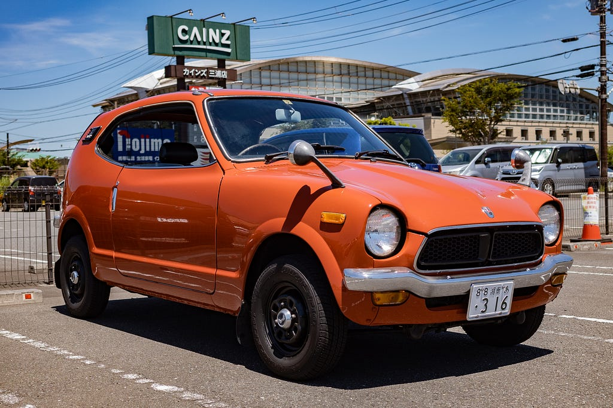
ホンダは部品が全然出ないとか聞いた事もあったが、まあ何とかなるだろう的な見切り発車。持ち主は自分で車の整備工場を経営している人だったが、自分の車はメンテしないというか、壊れたらなんとかすればいいかと考えるパターンが多いと思うし、車検切れしていたので車検整備をお願いしたら、「自分ではしたくないが、このままで車検通ると思う。」などと言う。違和感を覚えつつ、それなら無理にこの人にお願いしない方がいいだろうなと、最初に紹介してくれた方に相談したら横須賀で英車を主にやってる人がたぶん診てくれると思うのでと話をしてくれて、そちらで車検整備をお願いした。
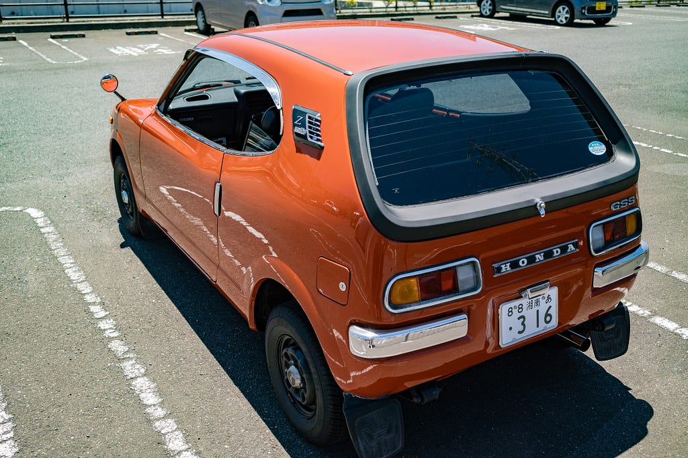
ブレーキ関係は結構キツイ状態だったらしく。いろいろあったようですがとりあえず必要だと思う部分は全部やってという雑なお願いをしてみたんですが、きちんとやってくれた上にヤフオクで落としたクラッチ板の交換も済ませてもらいました。本当はクラッチカバーやレリーズベアリングも交換したかったのですが、部品がなかったのでとりあえず。整備をしていただいた方も運転してみてエンジンは相当調子いいとのことだったのでラッキーだった。車検整備が終わって受け取ってから久しぶりのマニュアル車ということでドキドキしながら走り始めたけどやたら加速が鈍いのでおいおいこんな車と暮らしていけるのかしら？とちょっと絶望的な気分になっていたのですが、なんとかカインズの駐車場までたどり着き、ちょっと車関係の買い物をしてから駐車場内で運転の練習をしてみたら、この車は5速だけど1速は坂道や重たい物を乗せた時用くらいで普段は2速発進なのですが、2だと思って入れている位置が4速だっただけで、2速発進ならめっちゃいい感じで加速してくれました。安心。
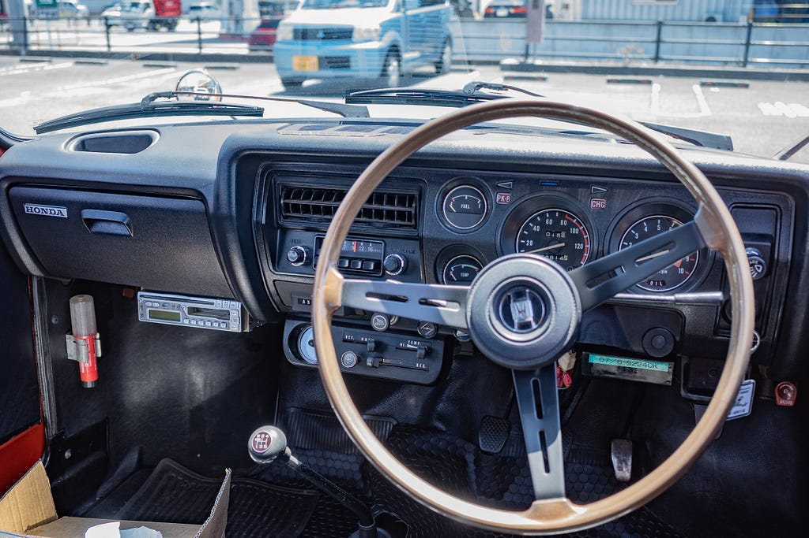
内装はかなり格好よいのではないか？ そんなわけで、Novaはよく自分が部品交換などをお願いして不在になるのでそんな時に足や、近場の狭い道を通るような時はZで行こうと思っていますが、クーラーもないし、格好優先で三角窓もないので暑くて死にそうです。早く涼しくなって欲しいところ。
内装はかなり格好よいのではないか？と思っています。ハンドルは微妙な小径に変更されていたのでヤフオクでこの時代のものを探して付けてもらいました。面白いのがこのころのホンダは軽自動車のパーツと乗用車のパーツがおそらく工場で流れて来たものをそのまま付けたのでしょうか？ステアリングのスプライン系が29mmと27mmとあって同じ形のステアリングが付かなかったりするとかでヤフオクで質問して測ってもらったりして合うものを購入しました。Zはハンドル部分が黒だと思うのでこのステアリングはライフ用かもしれませんが、他のZ用のステアリングはひび割れているのばかりでキレイなのはこれしか売ってなかったので仕方ないかなと。
年末に車検だった。そのついでにLEDテールに変更してもらった。めっちゃ明るいし、ついでにソケットも変更したので接触不良もなくなって良い感じだと思う。
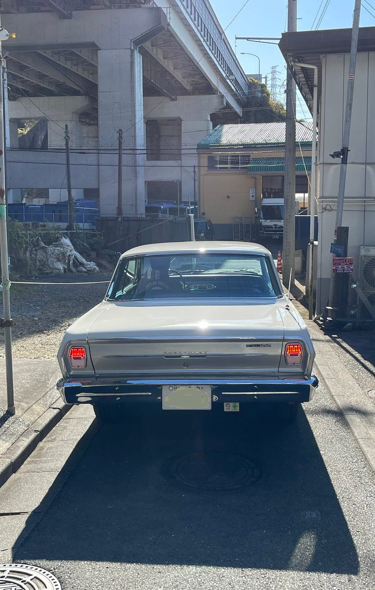
純正の形のままLEDに ホーンボタンがどうも1965年の物らしく、これも1963年式に交換する。ついでにSS用ホーンボタンのパーツも注文した。1965年式の方がかっこいいような気もするが
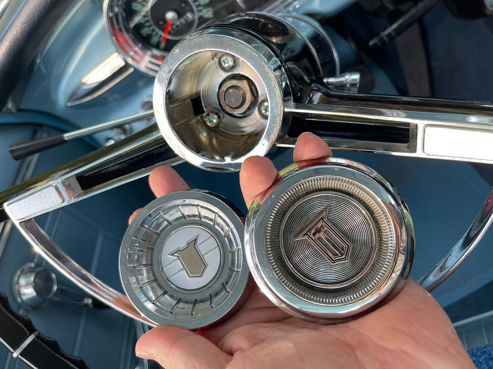
左が1963年、右が1965年 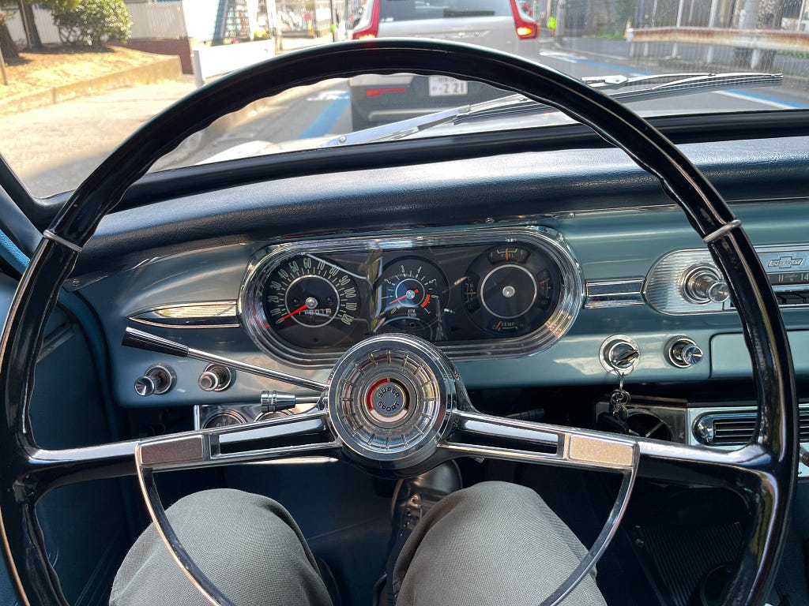
1963年式ホーンボタンに交換したあとSS用のパーツを入れて完成！
以前勤めていた会社の拠点が福島県いわき市にあったため、よく車で出張しては、好間家という峠の定食屋さんでかつ丼を食べていた。すごくおいしい記憶があって、定休日の月曜に出張だとガッカリしたことが何度もある。そんなお店が年末の28日で閉店になるというのでクリスマスの週末に行って来た。まずは土曜クリスマスイブの夕食にかつ丼を食べて、少し北上した広野という町で一泊。
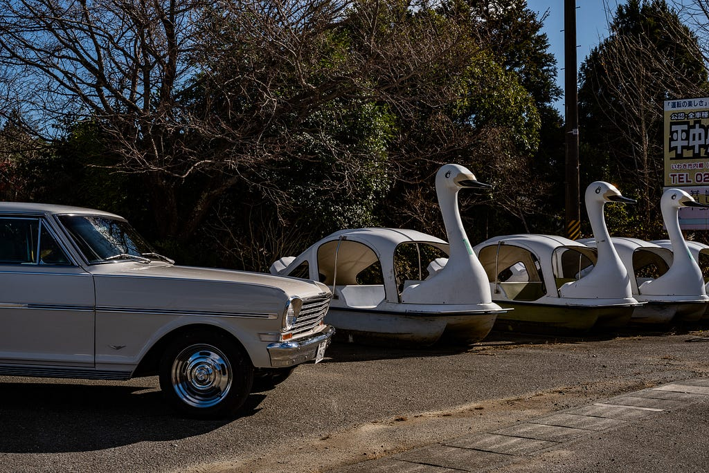
道端にあったスワンボートと記念撮影 広野駅前のホテルはきれいだったが、近くにあるJビレッジというサッカーの施設で合宿でもあるのか小学生の団体がいて大混雑だった。
翌朝更に北上して相馬まで行ってみた。相馬氏の主従関係は今でも続いているのか馬追いという行事などで有名で、一度どんなところか来てみたかったという。
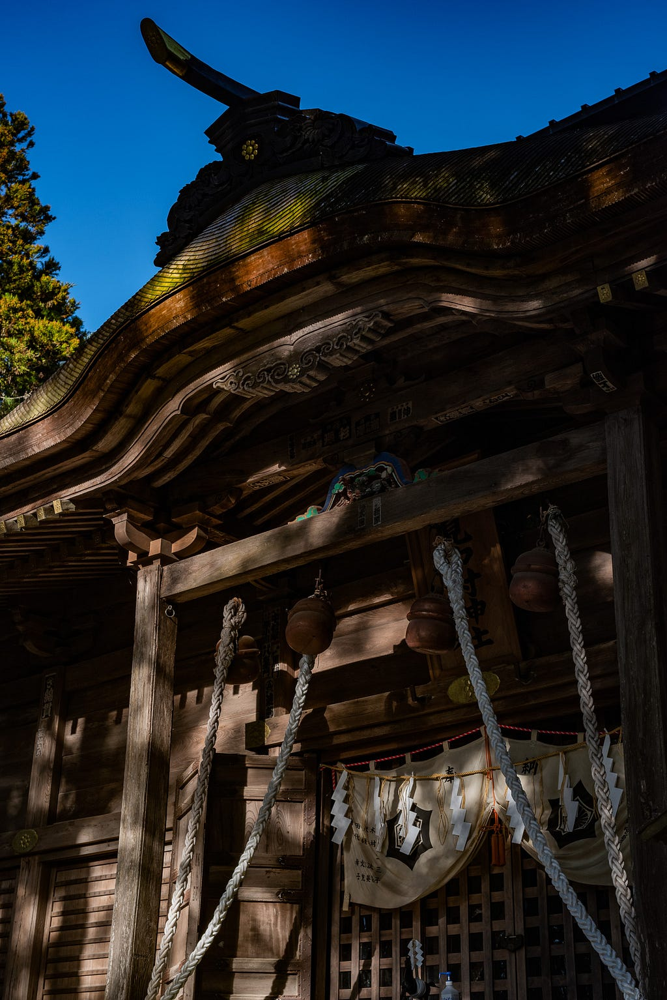
相馬中村神社 3つの神社を車で回って、正月の準備をする氏子さんたちが忙しく働いてる中をカメラを持ってウロウロしてきた。相馬中村神社、相馬太田神社、相馬小高神社の3つで相馬三妙見社というらしい。相馬氏はもとを辿ると平将門といわれていて、もともとは千葉県北西部や茨城県南西部あたりが地盤。そういえば相馬郡というのがあのあたりにあったなと。
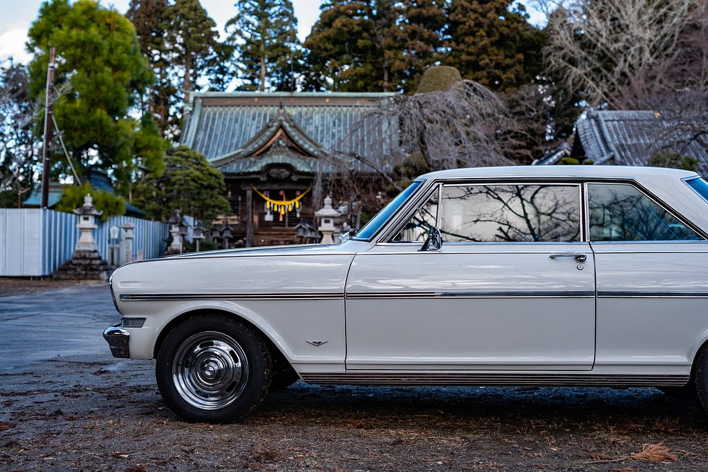
相馬小高神社では境内まで車で入れた。 そのあと福島第一原発の辺りまで行ってみたり、ネットで見て気になっていた、建築設計事務所が趣味で始めた車コレクションの展示場、オールドカーセンタークダンに行ってみた。6号線の原発に近いあたりは6号線の通行は出来るが海側は立ち入り禁止区域だったりするのでお店も開いていなくて不思議な光景だった。
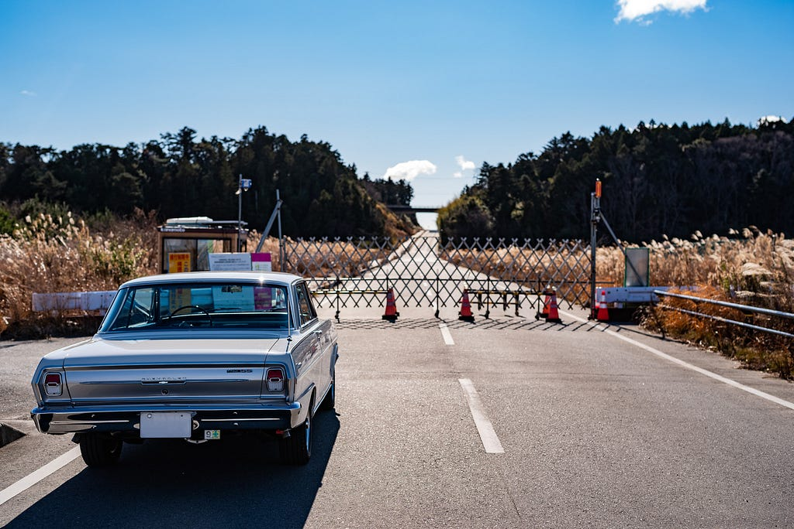
閉鎖された原発への道 あちこちに放射線量の表示があったり、警備員がいたりしてまだまだあの時から何年も経っているにも関わらず終わっていないのだなというのを実感できた。
オールドカーセンタークダンには飛行機も この車で神奈川から来たというと、オールドカーセンタークダンのおじさんは「ちょっとちょっと、まさかこの為に来たんじゃないよね？そんなたいそうな場所じゃないよ！」と笑っていた。昔団地の建築設計をする際にモジュールを組み立てていた工場をそのまま展示場にしていて、中にはたくさんの旧車が。全部エンジンは掛かるらしい。
ひとしきり見学した後、いわきまで戻って、昼にまた好間家に行って食事してから思い残すことのない状態にして帰路へ。
Nova凄くて、往復の間の燃費は9.8km/Lに達した。高速と信号のない田舎道をだらーっと走り続ける事で普段は5km/Lちょっとだというのに倍近く伸びてくれてガソリン高いので助かった。それと思うのはNovaの椅子全然腰やお尻が痛くならない。スゴイ。
Novaには買った時からついているIntroの17インチが付いている。ホイールがでかければでかいほどかっこいいみたいな感じもあるけど、せっかくNovaが純正をキープした見た目なので昔っぽい14とか15インチでぶよっとしたタイヤを履いてもそれっぽいのかも？とも思ったり。いっそもう少し大きな18、19にする？
今履いてるIntroは、なんとなくSUVのホイールみたいなデザインでいまいち気に入ってないので変えてみたいんだけど、いろいろわからない事がある。
このホイールを外してないので裏側に何か刻印されてるのかもしれないけれど、表側からはどんなスペックなのか手がかりがなく。また工場の方が言うには元々63は4穴のホイールのはずだが、シボレー系の5穴、67年あたり以降の物に変えられているという。ネットなどでこのあたりのNovaのBackspaceは4.75あたりという記事も見かけた。
タイヤはこんな感じのが付いている。前輪：205/45/17、後輪：225/45/17。PCD：4–3/4 (120.65)、Backspace：4.75（多少変わっても大丈夫らしい）。
このBackspaceというのが聞きなれないなあと思っていたら、日本車ではオフセットを使うけれど、アメ車はBackspaceで表記するそうだ。Backspaceは、ホイールの取り付け面から、内側のリムの端までの距離で、オフセットとかインセットというのは取り付け面から、ホイール幅の中心線までの距離のようだ。
現在の前後輪のタイヤサイズから互換性のあるタイヤのサイズと、適合するホイールがだいたいわかるのでこれを元に適合しそうなホイールを探している。前輪、後輪ともに同じホイールでタイヤだけ変えれば行けるのかな？と。
一番いいのは67年前後のNovaに付けてました！っていう中古ホイールを買うのが確実なのかなあとも思ってますが、ちょうどラリーホイールでそういうのがヤフオクに出ていてちょっと迷ったり。15/7Jで、前後同じタイヤで、195/65r15なので、後輪がちょっと今のより小さくなってしまう。ホワイトリボンなのでレトロでいいんだけど。
American Racing Salt Flat Polished Wheel 17X7や、American Racing VN507 Rodder Vintage Silver W/ Diamond Cut Lip Wheel 17X7。アルミで探すならこんなのもいいなと。
Nova Rally Wheel Kit、1-Piece Cast Aluminum、Staggered 17x8 And 17x9。昔のラリーホイールっぽい雰囲気なのがいいかもしれない。鉄ホイールだけど、こういうのもかっこいいかもしれない。最小サイズが18x8というのがなかなか。
ホイール選び難航中。5h 4.75の17x7くらいのホイールを探しているけど結構欠品が多くて手に入らない。ホイールって外から一番目立つところなのでなんとかしたいんだけどね。今履いている買った時から付いてるホイールはなんだかSUVみたいな感じで今イチ。
いくつか目星を付けたホイールがあるので、Photoshopで履かせてみる。
今付いてるNitroというブランドのホイール。SUVみたい。
US Mag Indy Polishというタイプ。骨太。
American Racing Salt Flats 鋳物っぽい仕上げ。
Rally Wheelのリプロ品。
LED Tail light & Wheels
2022.12.29
Rally Wheelをebayで買ってみたので、15インチのホイールに合うタイヤを近所のタイヤ屋さんで注文して付けてもらい、買った時から履いていた17インチのアルミはタイヤごと処分してもらった。持っておけば？とお店の人には言われたけどおいておく場所がないという。
買ったホイールはこちら＞ Vision Rally 57 15x6 5x4.75" +12mm Chrome Wheel Rim with Cap & Ring
エナセーブ BF Goodrichのホワイトレターを履きたかったけど日本に在庫なくて半年後になるとかだったので適当なタイヤを選んでみた。エナセーブ履いてるNovaそんなにいないよね。Rally Wheelにセンターキャップ付いて来て、付けてみたんだけどめっちゃ飛び出てて妙なので後日他のキャップ買ってみる。リングも付いてたけど取り付け方がわからなかったので放置。
リフトアップした車の下に初めて入った 純正のホイールは14インチで4穴なんだけどあまりにも選択肢がないのでアメリカ時代に5穴式に変更されている。今回15インチにするか14インチにするか迷ったけど、タイヤ屋さんで車を持ち上げてもらって覗いてみて15でよかったなと。ディスクブレーキが14インチだったら当たってたかも。
車体の下結構きれいだった。 それにしても車の下を覗くって楽しいですね。オイルパンこうなってるのか？とかスターターこれか！オイルフィルターここにあるのか？とか。
ホイールも車体の色に塗ればよかった それとididitのコラムに付いてるウインカーレバーがホイールを純正にしたら径が大きいのでレバーが短くて大変なので、これもebayで純正のレバーを買ってみた。これをididitのコラムに付けられるかやってみてといつものお店で頼んだらあっけなくそのまま付いたという。
ididitのウインカーレバー 純正のウインカーレバー 更に前から気になってたテールランプのLED化。ebayでキットを買ったのでそれで試してもらう。LED球を入れるタイプと、この画像みたいにAssyごとLED基板とレンズ一体になっているものなどいくつかあって、この一体化してるのを買ってみた。
一番下のはリレー
春先に昔この年代のアメ車に乗ってたことのある友人にNovaを乗せてみたら、変速ショックがひどいねと。買った時からこんな感じだったのでそんなものかなと思ってたんだけど、普通変速ショックないと思うよと言う。
そんなわけでいつもの工場のおじさんに相談していろいろ直そうという事に。ATの変速ショックはアメリカでおそらく加速をよくする様なキットをATの中に組み込んでるんじゃないかと考えているので開けてみてもしそうなら純正に戻す。そうでなかった場合は何か問題あるかもなので詳しく調べる。
ついでにブロックやオイルパンの継ぎ目あたりからのオイル漏れや、パワステのオイル漏れ、ドライブシャフトやプロペラシャフトのブーツ類も交換することに。
このタイミングで転職が決まって1か月半有休でアメリカに行くことにしたので7月中旬に預けて、9月頭までの間に上記の作業をしてもらいつつ、買った時から気になっていたボディーにいくつかあった塗装の浮きとか割れなどの部分を再塗装してもらう。モールが一杯使われてる車なので慎重にやるけれどもモールが壊れる可能性はあるとのこと。
結局二か月ちょっと掛かってこれらの作業が終わり、車は超きれいに。ついでなので近所のお店でコーティングも施行してみた。
左側面のモールのあたりの塗装浮き、禿は完璧に
エアクリーナーは10年ほど前にアメリカから日本に来た時のままらしい。そろそろエレメント変えてもいいかもね？と言われてはいるけれど、そもそもブランド名とかもなにもないシンプルなのがついている。
楕円のちょっとしたフィン付きでまあまあいい感じの形。
そもそもこのエアクリーナーはどこのなんなのか？がわかんないとエレメントを探せないんだよなあと思いつつ、困った時のeBayで検索してみたら、似たのが見つかった。「15" Half Finned Polished Aluminum Oval Retro Air Cleaner Kit Assembly w/ Element」。寸法とかは測って比べないといけないなと思いつつ、雨続きでそういう作業が出来ず。ガレージ欲しいな。値段は8000円位なので安い。でも日本への送料も8000円くらいする。
一方でこういうのもカッコいいかも？というのを見つけてしまったんだけど、あんまりエアクリーナーの高さがあるとボンネット閉めた時に当たってしまいそう。よく海外のNovaのボンネットの真ん中だけ高く盛り上がってたりするのはそういうのだったり。
「Edelbrock 4115 Classic Oval Air Cleaner」。キャブと同じEdelbrockで、アルミポリッシュ仕上げ。高さは上の無名の物より1インチ高いみたい。値段は4倍くらいするんですが・・・。送料は3000円くらいと逆に安い。まあトータルでは全然高いんだけどね。
アメ車あるあるで、インチ表記だったり、㎝だったりするんだけど、エアクリーナーはインチみたい。長さ：15インチ＝38.1cm、高さ：4インチ=10.16cm / 3インチ=7.62cm・・・2.5cmの差か。
エアクリーナーをキレイに出来たら、その右横のブレーキマスターシリンダーも、キレイなのに変えたいんだけど、今ちゃんと動いてるんだからそのままでいいんじゃん？というような気もする。下手に弄って愚図られるというのを昔FIAT Pandaで散々体験した。
自分のNovaには、純正のラジオ（電源接続されてない）とグローブボックスにPioneerのデッキが付いてる。
昔カーオーディオの仕事をしていたので、古巣のデッキに変えたいなと思ったら日本ではもう売ってないらしい。そしてPioneerは現役時代は憎い敵みたいな存在だったので出来たら使いたくないんですよね。でも今売られているデッキ見ると、PioneerかKENWOODかって感じでこの車に合うようなデザインの物がなくて。
そこで純正のラジオを入れ替えるタイプの商品がアメリカではあるようで、見た目は純正もどきで、AM/FM（US仕様なので日本のラジオほぼ聞けない）とUSBとかBluetoothが付いてたりするのでiPhoneと繋げばほぼなんでも聞けるじゃないか！と。最近iPhoneのアプリで世界中のラジオを聴けるようなのを見つけたので、ラジオが聞けない問題は携帯電波届けば解決かな。
というわけで、グローブボックスの中のPioneerを取っ払って、純正ラジオもどきを純正の位置に付けたいなと思って調べていると、RetroSoundと、Custom Autosoundというブランドがある模様。
RetroSoundの「1962–65 Chevrolet Chevy II/Nova Wonder Bar® Radio」はぱっと見は純正に見えるような感じ。純正のプレートを流用してラジオの部分だけ入れ替えるような感じ。Long Beach (Motor 4)というモデルなら、USBとBluetoothと、アメリカに居ないと意味ないけどSiriusXMも対応。左右のノブを幾つかある物から選べたりして純正に近付けるようにしてるけど、Novaっぽいノブはないんですよね。
そしてCustom Autosoundの「CAM-NOV-62–65-SBR」。USBは付いてるけどBLUKITというオプションを買わないとBluetoothは使えないみたい。まあグローブボックスの中のデッキにUSBでiPhone繋げられるのでそれで我慢すればいいんだけど、いちいち開けたり閉めたりするのも面倒なので、もし機会があれば変えてみたいな。
ちなみにNovaのスピーカーはダッシュの中央部に上向きに付いてるだけなので、すっごくしょぼい音がします。
先日Novaでダラダラと走っていて、信号で止まったのに回転数が落ちずに2000rpmほどでかなり大きな音を轟々とさせていて、怖かったのでATセレクターをNにしたら更に吹け上がってしまった。慌ててDに戻したけど結構なショックがドンっと車全体を揺らしたが、やはりタコメーターの針は2000ちょっとを指している。とにかくエンジンの排気音も大きい。
どうしたらいいのかな？と信号待ちの間に考えて、もしかして？と思ってアクセルペダルを手で手前に引いてみた。構造上ペダルは床を軸にパタパタ動くだけで、どこにも繋がっていなくて、ペダルの裏にスロットルに繋がるリンケージがあるようで、ペダルが引かれた時にそれも手前に動いたのか普段の回転数の500〜600rpmに落ち着いた。
そんなことがその日に2回ほど起こったので、近い内に工場で見てもらうつもり。
Replace an Air Cleaner
2021
購入した時から、赤黒くなっていて、むしろそういう色なのか？と思っていたエアクリーナーのエレメントを交換した方がいいですよと工場で言われていたので、eBayで買ってみました。
真っ黒です。
これが、こんな感じに。真っ白だったんですね・・・。
本当はこのカバーもちょっとボリュームあってかっこいいのですが、ねじの長さが合わなかったのでひとまずは、カバーは元々のやつをそのままつけています。
昨日、交換後ちゃんと走ってみました。交換の効果は歴然と・・・いや、よくわかりませんでした。
Maintenance and Customs
2021.11
ノバの機関系は非常に調子がよく、10月～11月に掛けては週3回ほど片道25㎞の通勤をこなしてくれた。おいおい一台体制かよ？という。しかしいくつか気になる点があり、工場には入庫のお願いをしていた。しばらく待って予定が空いたよということで11/14に入庫。特に連絡のないまま2週間ほど過ぎて「完了です」とのことで11/25に取りに行った。
①助手席側のルーフシールのゴムを前回交換してもらったのだが、外れて垂れ下がって来ていた件 → なんかすごく強力な接着剤を見つけたらしく、すごくビシっと直っていて、窓を閉めてもぴったり閉まるのでよかった。
②車高が購入時より結構前下がり、前のめりでかっこいいとも思うけれど、せっかく付いているモール類が水平が好みという件 → 車高をストックに戻してもらう。パーツ類を幾つか交換した模様。なんか同じ車と思えないほど分厚い印象になった。車高が低い方がかっこいいとは自分は思わない派。足回りでボールジョイントなどいくつかの部品がへたっていたので交換してくれたそう。
③運転席のシートも前回直してもらったけどまだやっぱり左下がりだし、私が重たい（75kgくらい）のか結構沈むという物。 → 工場の付き合いのある同じシート屋さんに、追加作業をお願いした。スプリングを増やしてくれて、ウレタン？も足してくれたそうで、やっと気持ちよく座れるようになった。前回の作業と重複する分は工場で負担してくれた。
④フロントのマーカーの不具合。夜ライトをつけると片方のスモール？ポジションランプが点かず、メーターの左ウインカーのインジケーターが常時点灯しているという不具合。 → 左のポジションランプのアース不良で、逃げれなかった電気がインジケーターを点けていた模様。
⑤カーオーディオ交換。元々ついていたパイオニア。USBがバカになっていて「このアクセサリーは使用できません」を頻発。照光ボタンがアホみたいに光って、グローブボックスの中にあるのに隙間からめっちゃ光が漏れるので気になってた。 → 大好きなアルパインにしたかったのだが、既にアルパインは国内でヘッドユニットを出していないので、仕方なくパイオニアの黒いやつに。Bluetoothも使えるようになったので、すごく快適になった。そしてなぜかわからないけど音が結構よくなった。
⑥タコメーターをクラスターに収める。以前、外付けのタコメーターをコンソール、クーラーの下に付けてもらった。かっこいいが見にくいので、クラスター内の時計と交換するタイプのタコメーターを入手。 → 目の前にタコがあるとほんとにいい感じだなと思った。ライト点灯時に若干暗いけど気にしない事にする。
⑦オイル交換他。 → 購入してから2000mile以上走ったようなので、そろそろ交換しておくかということで。エンジンが静かになった気がするけど気のせいだと思う。
Steering Wheel — 探し編
2021
買った時からついてきたステアリングは、70年式あたりのものらしく、63年式のNovaにはちょっと違和感のある物だった。握る部分が青で全体にマッチしているのが救い。ホーンボタンもSS仕様。
本来は、もうちょっとクラシックな雰囲気のホーンリングの付いたタイプがこの年式のNovaの物なのでeBayなどで探していたけどなかなかいいのがなく。eBayで見つけたけど赤・・・
Novaのステアリングはこんな感じのデザイン。よく似たImpalaとかのステアリングはリプロが出てるんだけど、Novaのはないみたいで探すのが大変。これも赤なので買って塗ればいいのか？などいろいろ謎。というわけでいつもお世話になっている工場の人に聞いてみると塗り直せばいけるけど、状態のいい物でないとヒビなどのリペアも必要になるとのこと。
Impalaのはこんな感じ。違いが・・・正直よくわかんないまま、Impalaのツートーンブルーのステアリングを買ってしまおうかと思ったのだが、一応工場に聞いてみると、ImpalaのステアリングはNovaの物より大きいのと、軸のところが合うかわからないよとのことでやめておいた。
そんなさなかに、黒だけどかなり状態のいいステアリングの売り物が出ていたので注文してみた。届いたら黒のまま付けるのか、青く塗り直すのか？などを検討していい方を選ぶつもり。
Steering Wheel — 取付編
2022.01
22年1月頭にアメリカに出張した際に、Nova純正のSteering Wheelをebayでホテルに届く様に買っておいた。自分のNovaは青内装なんでできれば青いホイールが欲しかったけど、良い出物がなくめっちゃ小汚いものばかり。黒だけどかなりキレイでホーンリングも付いているものが一つあったのでそれを買ってみた。
残念ながらSS用ではないのでホーンボタンは普通のNova用だけどそこはまあいいかなと。色を内装に合わせて青にも出来ると言われたんだけど今回はとりあえず黒のまま付けてもらう。ididitのコラムが使われているので、そのコラムとこのSteering Wheelを取り付ける部分に一工夫必要らしい。
純正のステアリングホイールついでにリバースに入れた時にリアのバックアップランプが点灯するようにしてもらった。駐車場とかでバックしたいのに後にいる人が気づかずに詰めて来るのがこれでだいぶ減るんじゃないかなと。
Novaのエンジンルームにあるプレートからいろいろわかるんじゃないかな？と思ってネットで調べてみた。銀色のプレートがそれ。
VIN Codeというのも、ドアの付け根あたりにあるらしいけど、とりあえず今手元にある画像ではこの銀のプレートに書かれている物からどんな事がわかるのか、それを調べるサイトで見ていく。
プレートに数字やアルファベットが散りばめられているんだけど、それぞれに意味があるようで、こんな感じになった。
CHEVROLET DIV. GENERAL MOTORS CO. DETROIT MICHIGAN
このNovaは、カリフォルニア州のオークランド工場で1963年5月第二週に製造された。エンジンはL6を積んでいたようだが、これは今はV8の283に換装されている。（先日見つけたアメリカでの二番目のオーナーが変えたと投稿していたのでそれだろう。）そして、この車はちゃんと製造時からSuper Sportsグレードだったこともわかった。色はErmine Whiteでこれも以前同じ色で塗り直してるらしい。PowerglideというのはATのこと。ちなみにオークランド工場は同じ年の夏には閉鎖になっている。
1963年というのは東京オリンピックの前年で、8月にキング牧師がワシントンで「I have a dream〜」の演説をしたワシントン大行進、11月にケネディ大統領が暗殺された年で、ホンダがT360という軽トラック、マツダがファミリアを発売した年でもある。
Novaがアメリカにいた時の投稿を見つけた
2021
Chevrolet ChevyII Nova SS 1963 Wheels みたいなキーワードで画像検索して、車に合いそうなホイールがないか見ていたら、あれ？っという画像を見つけた。むむむ？この変なホイール、2008年、車の色、あれ？もしかして自分の車じゃない？
リンク先を確認すると、2008年6月時点で2オーナー目。この人は25年この車を持っていて、ちょうど色を塗り直したところだったらしい。どうりで自分の車1963年製にしてはまあまあキレイな方だと思っていた。エンジンを283にスワップしたのもこの人みたい。
2012年後半にはこの車は日本に来て、自分の前のオーナーがいろいろ整備をしてたので、おそらく自分は4人目のオーナーかな？と。前のオーナーの投稿を見るというのは結構面白いなと。一応彼の投稿がなくなっても見れるように以下にコピペしておく。
Hi Steves. Here is my 63 nova ss. This car has been with me now over 25 years. I am the second owner and a original black plate car. I purchase it with all factory and dealer paperwork. I did a repaint/restoration and I finished it June of 2008. I wanted to do a v/8 conversion so I found a nova block and started working. The nova was and is super clean and wears all factory steel. I drive this car as much as I can. The factory air blows ice cold and cruises 75mph all day long. I have been very happy with the results and hope my family and I can enjoy it for years to come.
Year: 1963 / Model: Nova SS / Engine: 283 / Body: White